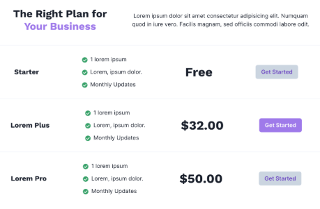

L1 - Building components & Layout
Problem Statement:
Create the below given UI to understand the importance of component structure in React. Split the below given
UI into components (Smallest you can)
Requirements:

- Reuse the components: Follow the DRY principle and create the components in such a way that you can
reuse them.
- Styling: Style the components exactly same as given in the UI. You can use inline styles or a separate
css file.